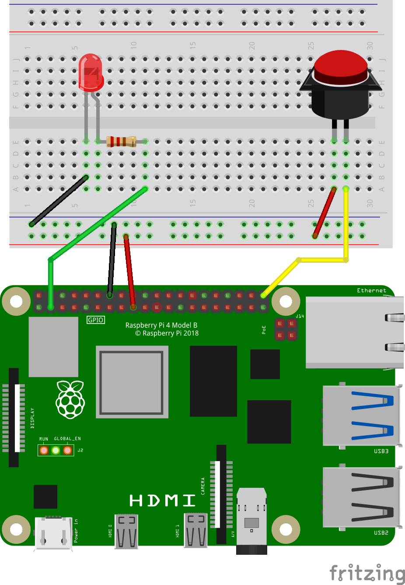

Understanding GPIO
GPIO stands for General Purpose Input/Output. You can “see” it on the Raspberry Pi; it’s that dual row of pins along one edge. There are two rows of twenty pins for a total of forty pins.
GPIO pins can deliver 3.3 volts direct current (DC), 5 volts DC, ground, or multipurpose input and output pins. Some pins also deliver specialty functions such as I2C, SPI, UART, 1-wire, or PWM. If you don’t pay attention to pin functions before you connect things to the GPIO, you will zap your Raspberry Pi. That’s a bad thing.
GPIO implies connecting wires
When you stray into the world of Raspberry Pi, it’s with the intent to connect sensors and devices to the GPIO pins. This implies circuits and wires. I can show you what to do, but I assume you have already gone through some of the excellent tutorials from the Raspberry Pi foundation or other places such as LinkedIn Learning.
Reading a switch
Let’s talk about this illustration.
Connecting a switch to Raspberry Pi
Pins and Identifiers
At the bottom is a picture of a Raspberry Pi. Along the top are the two rows of pins that expose the GPIO. There are several ways to identify these pins:
Physical/Board - This is the identification scheme used by
rpigpior. It is the number of the pin on the board. Pin 1 is on the inner (lower) left side. Pin 2 is on the outer (upper) left side. Pin 40 is on the outer right side. In this diagram, you’ll see it has a yellow wire connected.BCM - This is the signal as found on the Broadcom chip (BCM2835 and others) used to power the GPIO. For example, Board pin 5 (the third pin from the left on the lower (inside) row) is connected to BCM signal line 3. You’ll often see this referred to as GPIO03. Yes, this is confusing, it does make sense when you understand why the designers did this.
Wiring Pi - A system written for admirers of Arduino. Wiring Pi is popular among the C programming crowd. I don’t use it for
rpigpior.
Schematics
At the top of the illustration is a white box with a grid of dots. This is called a breadboard and this is exactly what they look like.
At the top and bottom are two horizontal rows (four rows total). All of the holes in each horizontal row are electrically connected together. These are called rails. If I were to attach five volts to the top right corner hole, I would read five volts at the top left corner.
In the middle are two grids separated by a gutter. Each grid is five rows by thirty columns. All of the holes in each column are connected - but not across the grid. If I attached five volts to the first column, first row, I would read five volts in the first column, fifth row.
Breadboards are used with wires, resistors, capacitors, switches, lights, and microcircuits (such as transistors) to quickly prototype electrical circuits. In this case, a switch is connected to the Raspberry Pi with a yellow and red wire.
Connect a switch to the Raspberry Pi
The illustration shows how to connect a pushbutton to the Raspberry Pi. In this case,
A red wire connects board pin 17 to one side of the pushbutton. Board pin 17 supplies 3.3 volts DC.
A yellow wire connects board pin 40 to the other side of the pushbutton. Board pin 40 connects to the Broadcom microcircuit and exposes GPIO21. This allows the Raspberry Pi to read the state of the pushbutton.
Programming
Consider this code:
library(rpigpior)
while (TRUE) {
if (rpi_get(40)) {
print("Button pushed")
} else {
print("Button not pushed")
}
}On each pass through the while() loop, this program will
read the state of board pin 40 with rpi_get(40). If the
button is pushed, it will print("Button Pushed"). If pin 40
is not pushed, it will print("Button not pushed")
Setting a pin
Now consider this new illustration, which adds to the previous circuit.

There is all sorts of new things happening.
A red wire connects board pin 17 to the lowest rail. This supplies 3.3 volts.
A black wire connects board pin 14 to the next lowest rail. This supplies ground.
The wiring for the switch is electrically the same as in the previous illustration:
A yellow wire connects one side of the switch to board pin 40 (same as before)
A red wire connects the 3.3 volt rail to the other side of the switch.
An LED (Light Emitting Diode) has been added to the breadboard.
A black wire connects the top rail (ground) to the cathode of the LED.
A 220 ohm resistor is connected to the anode of the LED. This is then connected via a green wire to board pin 3.
Code to blink an LED
Given the above circuit, this code will then blink the LED
library(rpigpior)
while (TRUE) {
if (rpi_get(40)) {
rpi_set(3,1)
Sys.sleep(1)
rpi_set(3,0)
Sys.sleep(3)
}
}Notice the addition of rpi_set(3,1). This tells the
Raspberry Pi to turn board pin 3 on.
rpi_set(3,0) tells the Raspberry Pi to turn board pin 3
off.
The loop reads the state of the switch rpi_get(40). If
the button is pushed, the LED attached to pin 3 will blink; 1 second on,
3 seconds off.